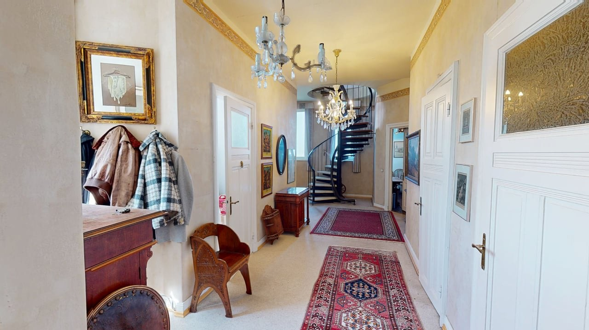

As-Built-Dokumentation
Der gebaute Zustand, begehbar festgehalten: Grundlage für Abnahme, Bestand und spätere Umbauten.
Der tatsächliche Bauzustand, begehbar festgehalten: As-Built, Baufortschritt, Aufmaß und Grundriss aus einem Scan. Alle Beteiligten stimmen sich ortsunabhängig am selben Abbild ab.
Festpreis ab 430 € je Aufnahme, nach Fläche

Statt vieler Einzelfotos entsteht ein maßhaltiges 3D-Abbild des Bauzustands. Bauherr, Planung, Gewerke und Versicherung greifen jederzeit auf denselben Stand zu.
Der gebaute Zustand, begehbar festgehalten: Grundlage für Abnahme, Bestand und spätere Umbauten.
Scans in mehreren Bauphasen ergeben eine lückenlose Verlaufsdoku für Bautenstandsberichte und Nachweise.
Gewerke, Planer und Bauherren begehen die Baustelle digital. Weniger Vor-Ort-Termine, schnellere Entscheidungen.
Ein Scan vor dem Schließen der Wände hält Leitungen fest: belastbarer Nachweis für Versicherung und Gewährleistung.
Neubau, Sanierung, Umbau oder Bestandsverwaltung: Die 3D-Dokumentation passt sich deiner Bauphase an.
Realitätsgetreues Abbild des gebauten Zustands.
Lückenlose Verlaufsdoku über mehrere Phasen.
Maße und Grundriss direkt aus dem Scan.
Zustände vergleichbar dokumentieren.
Leitungen vor dem Verschließen festhalten.
Nachweis für Bauherr, Gewerke & Versicherung.

„Ich scanne selbst vor Ort. Tour und Bilder bekommst du meist wenige Tage später.“
Ob Hamburg, Lübeck, Berlin oder Völklingen: Ich scanne dort, wo dein Objekt steht. Anfahrt bis 30 km um Hamburg inklusive.
3D-Rundgang und 4K-Fotos aus einer Hand, persönlich und zuverlässig.
Der tatsächlich gebaute Zustand wird begehbar in 3D festgehalten, vom Rohbau bis zum fertigen Objekt. Ideal für Bestandsaufnahme, Abnahme und spätere Umbauten.
Ja. Ich scanne in definierten Bauphasen, so entsteht eine lückenlose Verlaufsdoku für Bautenstandsberichte, Gewerke-Abstimmung und Nachweise.
Ja. Aus dem Scan entstehen 2D-Grundriss und Maße, im Modell lässt sich zwischen Punkten messen. Praktisch für Planung, Aufmaß und Materialermittlung.
Ja. Ein Scan vor dem Schließen von Wänden und Decken hält Leitungen, Rohre und Elektrik fest. Das verhindert später teure Fehlbohrungen.
3D-Modell, Grundriss, Maße und 4K-Bilder aus jedem Scan. Mehrere Bauphasen auf Anfrage.
Bis 500 m² 950 €, darüber individuelles Angebot. Anfahrt bis 30 km um Hamburg inklusive.
Richtpreis und Terminvorschlag innerhalb von 24 Stunden an Werktagen.
Begehbarer Rundgang einer Gebäudeeinheit, dasselbe Prinzip gilt für Bau- und Sanierungsobjekte. Tour anklicken, sie startet direkt hier. Baureferenzen auf Anfrage.

Schildere mir kurz Projekt, Fläche und Bauphasen, du bekommst zeitnah ein Angebot. Aus Hamburg, deutschlandweit.
Richtpreis und Terminvorschlag innerhalb von 24 Stunden an Werktagen.